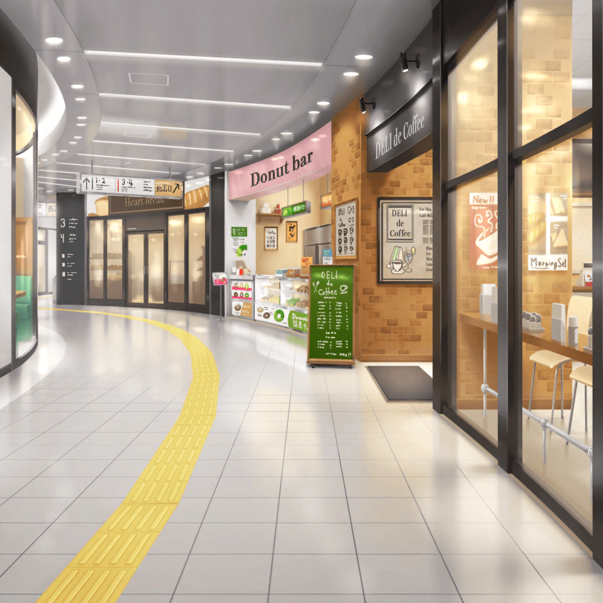

水族館最寄り駅 構内
こころ
さあ！ いよいよ到着ね！
楽しみだわ！
ここに本物のイルカさんがいるのね！
美咲
ここにはさすがにいないって。
ここはただの駅だから
こころ
ここが駅っていう場所なのね！ ステキ！
人がたくさんいるわ！
あたしもついに駅にやって来たのね！
美咲
電車に乗る前にも散々説明したから。
つーか、駅に来たことないって、ホントどうなの？
こころ
人がこれだけいるのなら、
きっとイルカさんもたくさんいるはずよ！
さあ、早く会いに行きましょう！
美咲
だーかーら！
ここにはいないんだっての。
イルカがいるのは水族館！
はぐみ
ねえねえ、みーくん。
この駅の近くに水族館があるの？
美咲
そーそ。ちゃんとイルカもいるし。
弟と妹を連れてたまに来るから間違いないんで
薫
いよいよ、念願のご対面、というわけか。
きっと私を待ちかねていることだろうね、
イルカの子猫ちゃんは
美咲
それはややこしいでしょ……
イルカはイルカでいいじゃん。
イルカに『子猫ちゃん』って、わけわかんないし
こころ
さあ、それじゃあみんな！
水族館に向けて出発よっ！
美咲
……ってあれ？
ちょっと待って
はぐみ
ん？ どうしたのみーくん？
美咲
花音さんがいないんだけど……
はぐみ
……あ、あれ？ ホントだ。
さっきまで、はぐみの後ろにいたんだよ！？
薫
ふっふふ。
花音は本当に、糸の切れた風船のようだね
美咲
そんなのんきなこと言ってる場合じゃないから！
花音さんのことだから、
きっと道に迷っちゃったりしてるんじゃないかな？
はぐみ
確かにかのちゃん先輩って、すっごい方向オンチだからなー。
この前なんて、ショッピングモールの中で迷子になってたよ
美咲
あたし電話してみるから、みんなちょっと待ってて
美咲
…………あ、もしもし花音さん？
いま、どこに？
……え？ 白に青い線の電車……？
美咲
……あ！ それ新幹線！？
ダメダメダメ！ 絶対乗っちゃダメ！
そこから動かないで！ 今行くから！
美咲
……はあ。
……なんかいつの間にか新幹線乗り場だって。
危なく乗りそうだったけど、なんとか阻止したから
はぐみ
危なかったね～
美咲
とりあえず、みんなで迎えに行こう
数分後
水族館最寄り駅 新幹線乗り場
花音
ふえぇ……
ここって新幹線乗り場、だったんだ……
花音
こんなところで迷子になっちゃうなんて……
わ、私って……ホントにダメだなぁ……
はぐみ
あ、かのちゃん先輩見つけた！ おーい！
花音
はぐみちゃん！ それにみんなも！
美咲
良かったー、花音さん。
心配しましたよー
花音
ほ、ホントにごめんね。
前の人がはぐみちゃんだと思ってついて行ったら、
いつの間にかこんなところまで来ちゃってて……
こころ
花音って本当にステキだわ！
花音と一緒にいると、
まるで毎日がジェットコースターみたいだわ！
美咲
こころのほうがジェットコースターみたいだって！
薫
花音、次ははぐみじゃなくて、私を目印にするといい。
決して私から目を離してはいけないよ
花音
う、うん……
みんなありがとね
こころ
それじゃあ、これで全員揃ったわね！
今すぐイルカさんを見に行きましょう！
イルカさんはきっとあたし達を待ちわびているわ！
こころ
しゅっぱーつ、しんこー！
花音
……え？
……あ、あれ？
美咲
か、花音さん……いきなり、逆ですって……
花音
あ、ごめんね……
そうじゃなくて、あそこの自動販売機……
美咲
自動販売機……？
花音
あそこの後ろで、何か動いたみたいに見えたから……
美咲
猫かなんか……ですか？
花音
ううん！
もうちょっと大きかったよ。
立って歩いてるみたいに見えたんだけど……
美咲
ひょっとして迷子……とか、ですかね？
こころ
ねえ、２人とも。
今日というステキな１日が終わってしまうわ！
早く行きましょう！
花音
あ、あの……こころちゃん、少し待っててくれるかな？
なんか迷子になっちゃった子がいるみたいだから、
私、ちょっと見てくるね
美咲
あ、花音さん！
あたしも行きます
花音
え、えっとこの辺にいた気がしたんだけど……
？？？
キュゥゥゥ
美咲
……あれ？
今、なんか鳴き声みたいなの聞こえませんでした？
花音
うん、聞こえた！
たぶん、この自動販売機の裏だと思う！
ちょっと覗いてみるね……っ
花音
ん～っと……、えい……っ
花音
…………え？
美咲
花音さん？
どうですか？ なんかいました？
花音
……う、うん！ いたよ！
あ！ 今、こっちから出てきたっ！
美咲
…………あ、あっと、あの……えぇっ！？
ペンギン
キュ、キュゥゥゥゥゥ～ッ！
美咲
こ、これって……
花音・美咲
ペンギン！？